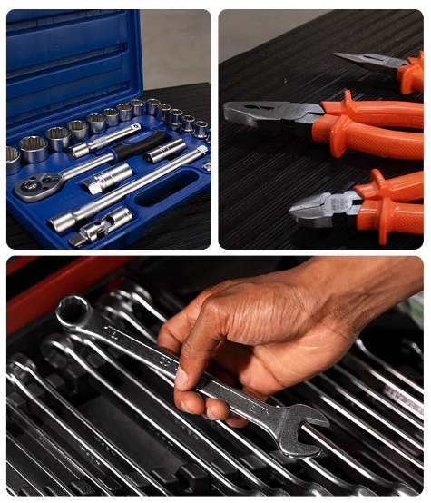

Início
Nossa história
Produtos
Representantes
Contato
Conheça a RioSul Tools
Nascida a partir do experiente Grupo Bovenau, a Riosul Tools desponta no mercado com uma linha completa de ferramentas profissionais, oferecendo produtos de altíssima qualidade e resistência, buscando suprir as mais variadas necessidades dos profissionais.
